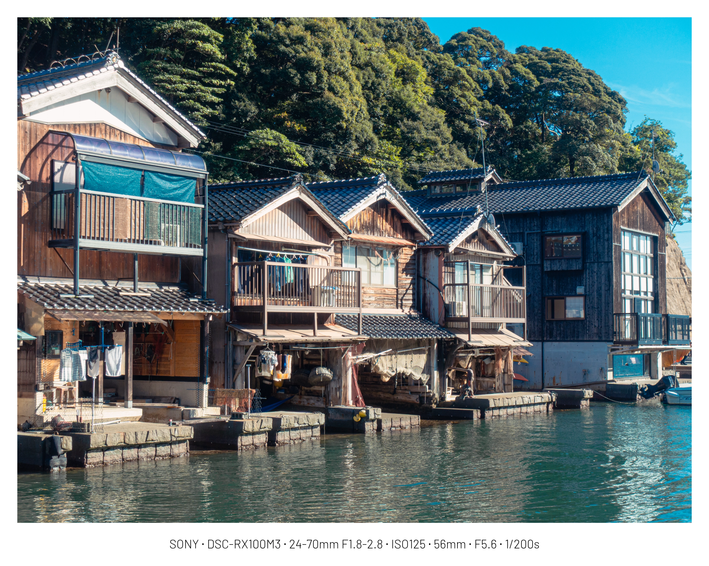
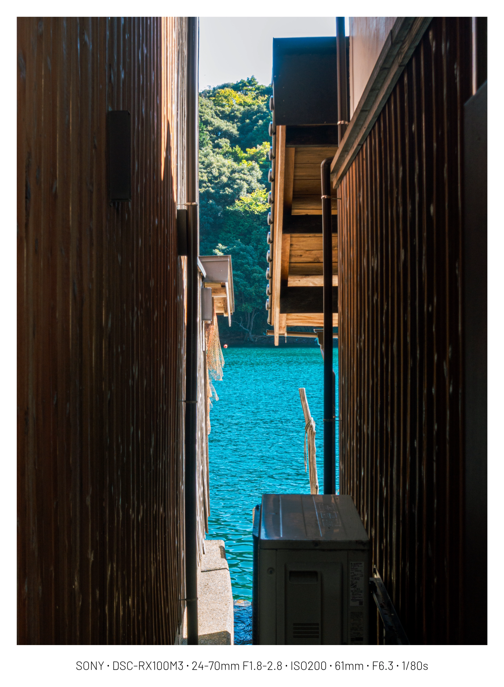
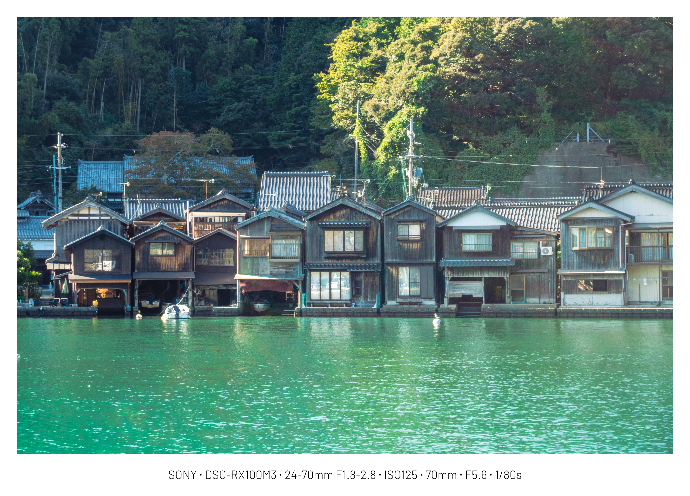
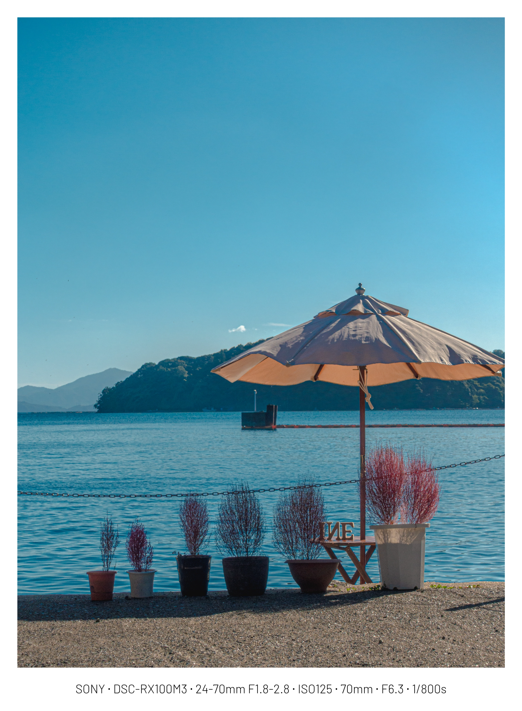
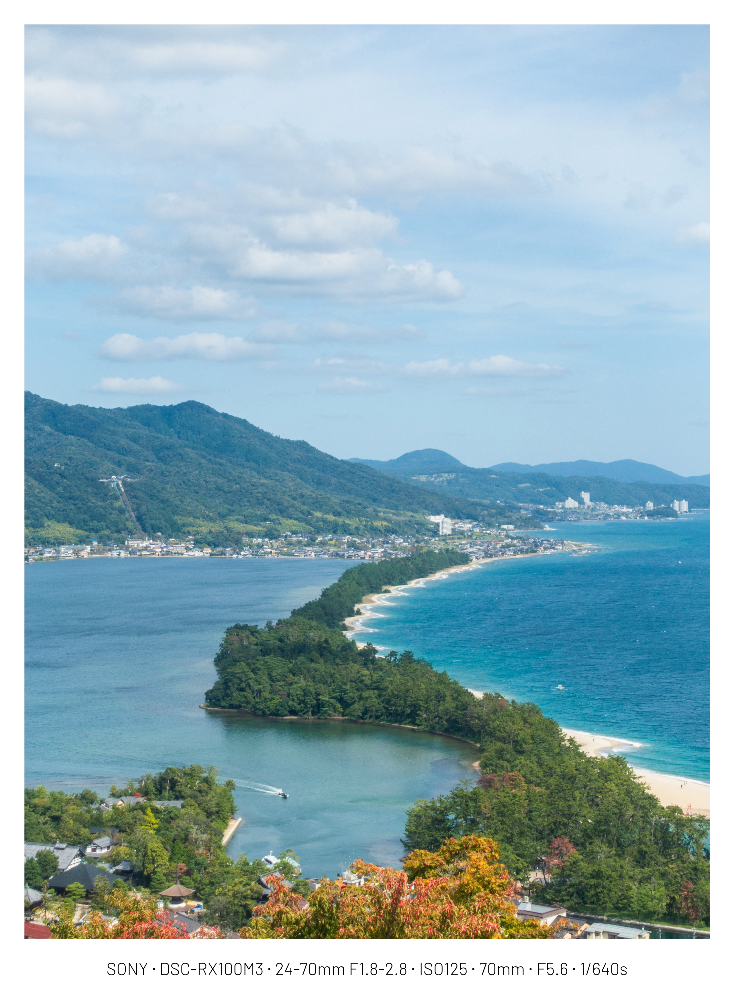
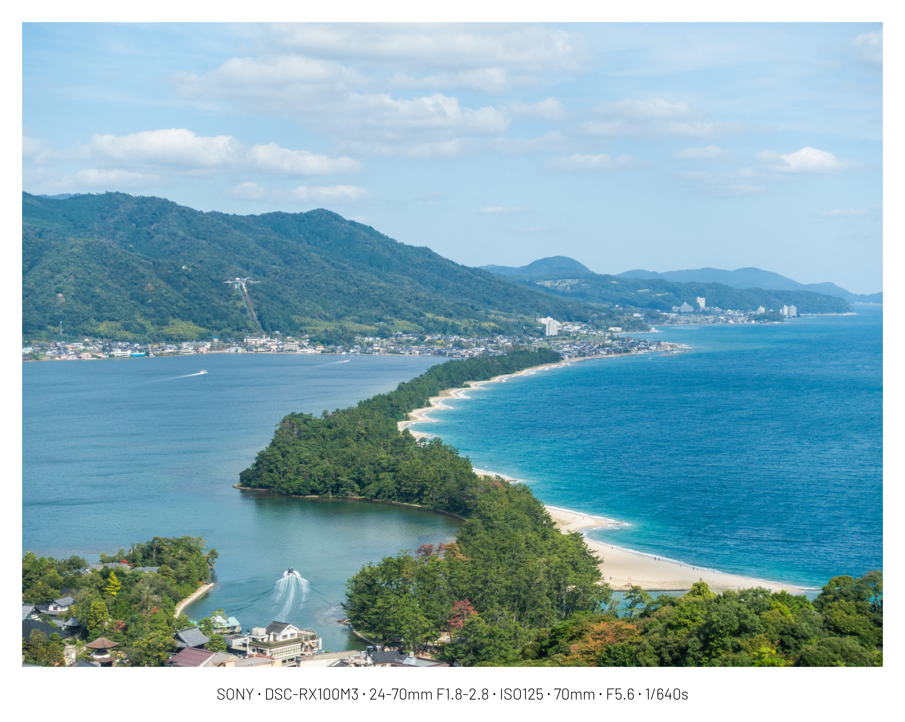
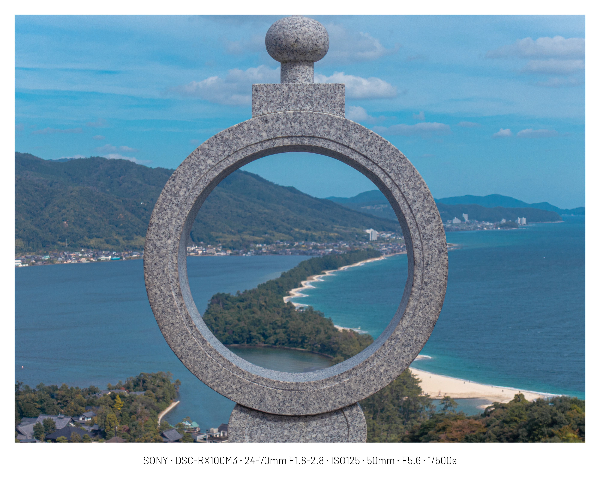
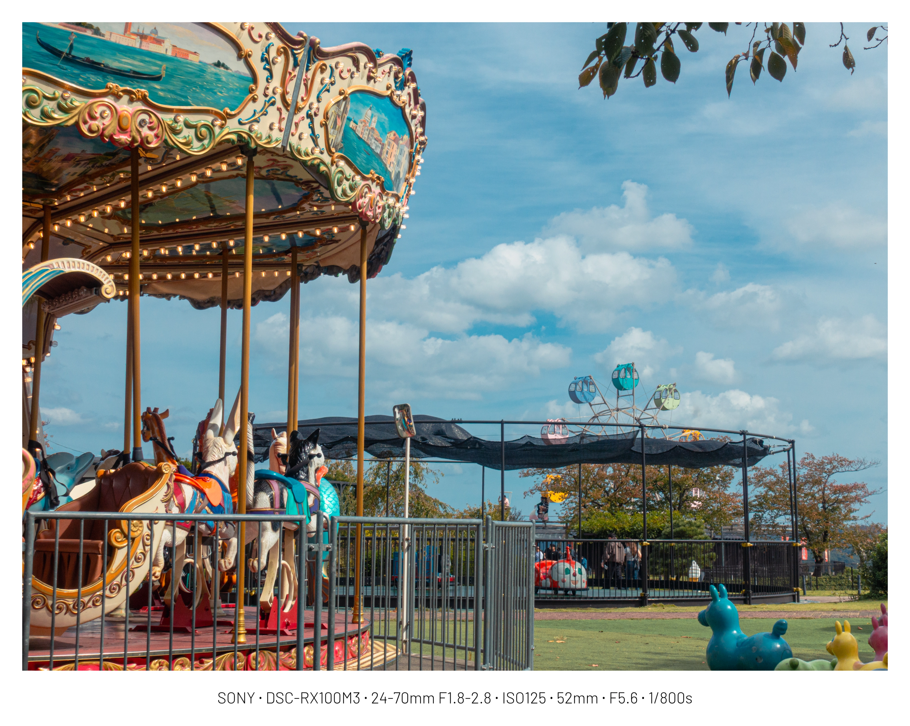
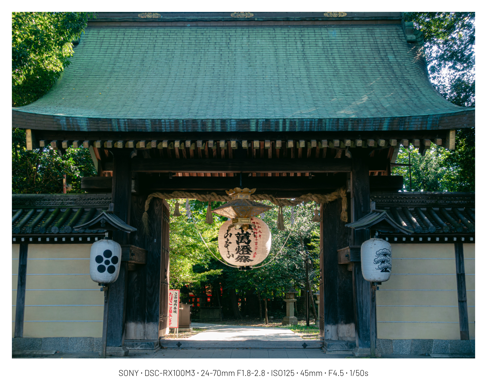
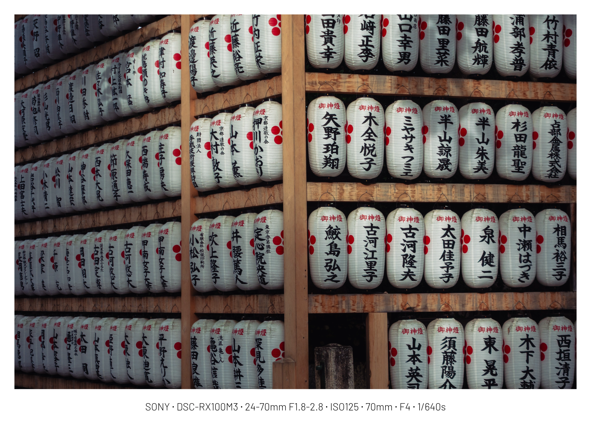

10월 중순 클X에서 버스투어 4만원에 예약하고 다녀옴
투어 인원은 50명 정도에 한국인 가이드
한국인 6명 일본인 10명 나머지 중국인이더라
버스투어 장점으로는 버스나 전철 대비 압도적으로 저렴하고 편하다인데
당일치기 투어 특성상 관광 스팟에서의 체류시간이 좀 짧음
아마노하시다테 2시간 (점심시간 포함), 이네후나야 약 30분 정도 있다가 교토로 돌아옴
간사이 와이드패스 구매한 사람이면 전철타고 다녀오는걸 추천함
안샀으면 그냥 버스투어로 대충 보고와도 됨
이네후나야는 마을이 작아서 구석구석 사진 찍으러 다니는거 아니면 30분 둘러보면 더 볼거 없음
아마노하시다테 상점가쪽 식당은 관광객 가격으로 비싸게 팔면서 음식 퀄리티는 구려서 안사먹는거 추천함
JR 아마노하시다테역 내부에 작은 편의점? 같은곳에서 김밥이랑 샌드류 저렴하게 판매하는데 그거 대충 사먹고 저녁에 오사카나 교토 돌아와서 돈 아낀만큼 비싼거 사먹으셈
마지막 사진 2장은 키타노텐만구
- dc official App
댓글
수집 당시 댓글 31개
⊃∩ · 11.15 21:31:36
2.1배TQQQ · 11.15 21:35:07
ㅇㅇ · 11.15 21:35:59
· ㅇㅇ · 11.15 21:37:00
· ㅇㅇ · 11.15 21:39:04
오왕이랜선집사 · 11.15 21:41:08
Ethnos · 11.15 21:45:21
ㅇㅇ · 11.15 21:49:58
YAMATO · 11.15 21:54:43
일붕이1 · 11.15 21:55:05
ㅇㅇ · 11.15 21:55:48
제로둘기 · 11.15 22:02:48
오구링 · 11.15 22:50:21
숙주와한펜 · 11.15 23:58:08
하ㅅ산 · 11.16 08:01:17
킷사마 · 11.17 22:08:01
봇치쟝 · 11.18 23:20:38
ㅇㅇ · 11.18 23:21:06
실베도로롱 · 11.18 23:24:26
ㅇㅇ · 11.18 23:27:04
환란 전 교회 휴거 · 11.19 00:10:01
주소킹 · 11.19 00:17:06
ㅇㅇ · 11.19 00:40:56
ㅇㅇ · 11.19 02:44:12
ㅇㅇ · 11.19 02:44:17
ㅇㅇ · 11.19 03:42:29
ㅇㅇ · 11.19 04:10:14
ㅇㅇ · 11.19 06:50:26
ㅇㅇ · 11.19 07:43:42
ㅇㅇ · 11.19 09:33:32
ㅇㅇ · 11.19 11:01:29